Users of Process Director v5.0 and higher have access to the Machine Learning, or ML, definition object. The ML Definition enables you to use Process Director's Artificial Intelligence capabilities to review a dataset, and make predictions based on the state of that dataset.
Process Director has long used Machine Learning/Artificial Intelligence (ML/AI) to analyze how Timelines work in the real world, and make predictions about when tasks will run in the current instance, based on the ML/AI analysis. For instance, this AI capability is how Process Director can predict when a task will be late. With the ML Definition, you can use the same capability to make predictions on any desired data, using a number of different statistical and analytic functions. The ML Definition object is globally available in Process Director, just like a Business Value, and can analyze data from both inside of and/or external to Process Director.
Keep in mind that this help topic is not designed to teach you what statistical models are, or provide a lesson on how ML/AI works. It is, rather, intended to assist you in familiarizing yourself with the Process Director object itself. Just like with a SQL Business value, where many users will not have the experience that enables them to construct SQL statements, the ML Definition assumes some basic familiarity with statistical functions, e.g., regression analysis, SVM, etc., to use effectively.
To create an ML Definition, simply select Machine Learning Definition from the Create New... dropdown menu located in the upper right corner of the Content List.
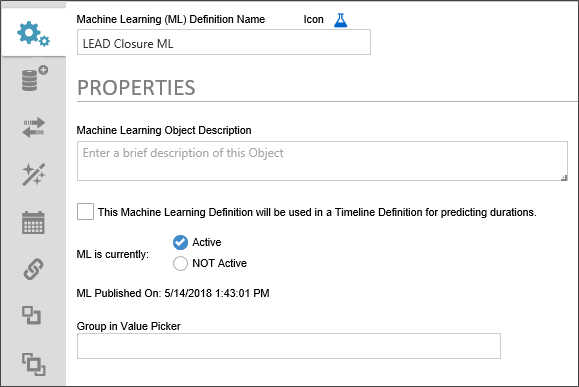
The Properties tab contains the basic configuration and publication options for the object.
The Icon Property enables you to use the Icon Chooser to pick the Desired Icon for the object.
The Name of the object you wish to display in the Content List.
A brief description of the ML Definition's purpose. This is mainly for administrative purposes, and any data entered here will appear on the second line of the content list entry for this object.
This property, when checked, tells Process Director that this ML object will be used to make time-based, predictive analyses for the completion of Timeline Activities.
Selecting the Active radio button will expose the ML Definition to the dropdown menu used in the Choose System Variable dialog box. Setting the definition to NOT Active will deactivate the definition, and it will not be available for use in process Director until it is set to Active.
A text field that sets the menu category in which the ML Definition will appear in the in the Choose System Variable dialog box.
The Data Set tab enables you to choose the dataset that will be used for the ML Analysis. You can select any of the following data sources, and each selected data source will change the user interface to reflect the type of dataset you choose.
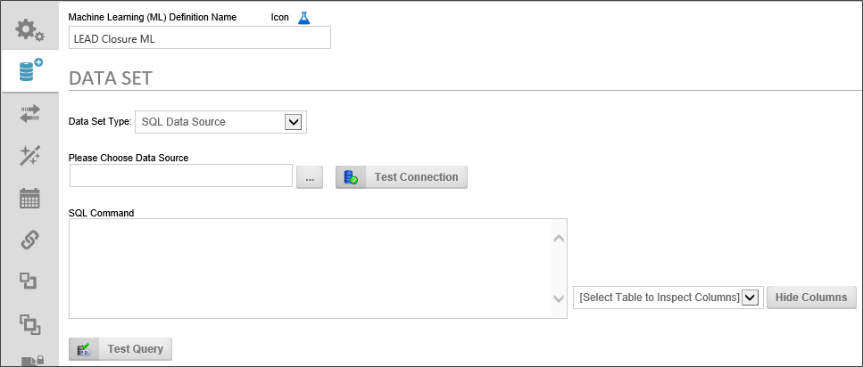
The SQL Data Source can extract data from any accessible SQL-based data source supported by Process Director.
Data Set Type: You can use any existing SQL Dastasource object to access the data, then write the appropriate SQL Command to extract only the data you'd like to use for your analysis. Simply select the Datasource object that connects to your database, using the Object Picker. You can click the Test Connection button to ensure you are connecting to the database specified in the Datasource object.
SQL Command: Write the desired SQL Command into the Text Box. Once you have written your SQL query, you can use the Test Query button to ensure that the SQL Command returns data.
Select Table to Inspect Columns: To assist you, the Select Table to Inspect Columns dropdown will automatically be filled with all of the table names of the tables that are accessible from the Datasource object you have selected. When you select a table name from the dropdown, a list of the fields in the selected will be displayed.
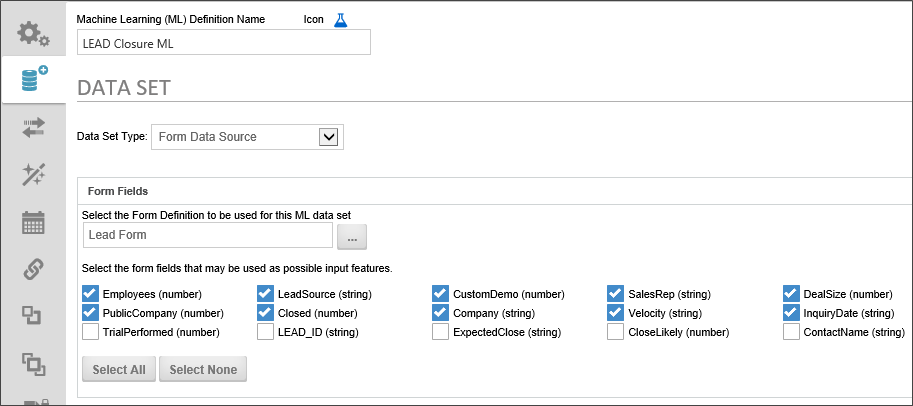
The Form Data Source enables you to use the existing instances of any Form Definition to use for the ML analysis. Using the Select the Form Definition to be used for this ML data set Object Picker, select the form definition that contains the instances you wish to use. Once you do so, a list of form fields from that form definition will appear. Using the check boxes adjacent to each field, you can choose the specific form fields you wish to include in your ML analysis. Additionally, you can choose all form fields by clicking the Select All button, or no form fields by clicking the Select None button.
In most cases, you probably won't want all of the form fields included in your analysis. For instance, many forms have common fields like names or telephone numbers that probably don't contribute much to an ML analysis. Conversely, unchecking all the form fields leaves you with nothing to analyze. You'll need to select only the form fields that have relevance to your analysis.
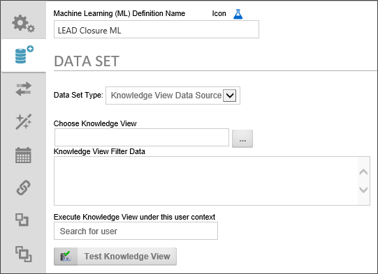
Any existing Knowledge View can be sued as a data source for your ML Analysis.
Choose Knowledge View: Select the Knowledge View you wish to use by choosing it from the Object Picker.
Knowledge View Filter Data: If your Knowledge View uses any filter variables, you can enter the appropriate filter statements in this text box, using a new line for each desired filter statement.
Execute Knowledge View under this user context: Using the User Picker, select a user that has run and view permission for the Knowledge View. Since ML Definitions, Like Business Values, are global, the user who runs the ML definition may not have permissions to access the underlying Knowledge View. Selecting a user with the appropriate permission to run the Knowledge View will run it in that user's context. You must also provide a Password for the user, once selected.
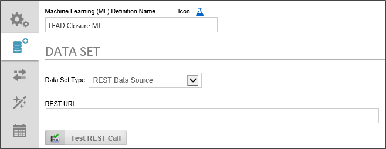
Any accessible REST web service can be used to provide analysis data. Simply enter the URL for the REST web service, along with any required URL parameters, into the REST URL text box. You may use system variables as URL Parameters.
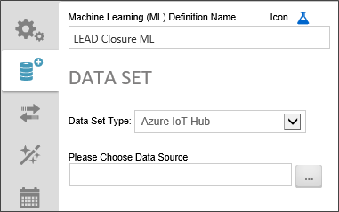
Users of Microsoft Azure's IoT Hub service can access their IoT Hub directly through Process Director. Use the Please Choose Data Source Object Picker to select the Datasource object that connects to your hub.
Once your dataset has been selected from the Data Set tab, you may find it necessary to apply some changes to your data, or to ignore part of the data that you think isn't relevant to the decision or prediction that you'd like the ML Definition to make. This process of altering or ignoring some data in the dataset is called transformation, and conducting those transformations is the purpose of the Transformation tab.
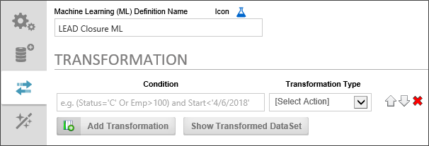
To add a Transformation, click the Add Transformation button, which will make a transformation row appear on the page. Click the button again to add additional rows.
The transformation row initially has two properties to set:
The Condition enables you to identify a specific data criterion to look for to determine whether the data in that row should be transformed. The Condition is much like the "WHERE" clause of a SQL statement, and, in fact, uses a SQL-like syntax to determine what data row to look for to apply the transformation. The Condition is specified by using two values, separated by some kind of operator in the middle. The Left-side value is the data field you'd like to look for, and the right side of the Condition is the value you are trying to match in that field, e.g.:
FieldName = 'FieldValue'
You can use all of the expected operators such as <, >, =, etc. when creating your Condition. Text or date values need to be identified with single quotes, while number values need no identifiers. For instance, let's say you want to look for the data record that has the Primary Key ID of 10. Your Condition could be written as:
id = 10
Conversely, if you were looking for data from a specific date, your Condition might be written as:
StartDate = '5/15/2018'
You can also use the AND and OR keywords to create a complex Condition that uses multiple search criteria, such as
StartDate = '5/15/2018' AND Category = 'C'
There are two options for conducting the transformation. The first is Ignore Row. If you choose this option, the data will be removed from the dataset. The second option, however, is to Set Column to Value which enables you to actually change the existing data in some way. If you select this option, some new property selections will also appear.
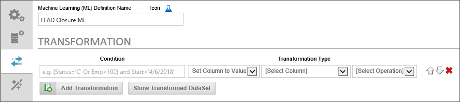
In the new column that is labeled, [Select Column], you can choose the column whose value you wish to change.
In the [Select Operation] column, you can choose the type of change you'd like to make. The following options are available:
Once you have added all of the desired transformations, you can view the resulting data by clicking the Show Transformed Data Set button, to display a data window showing you the transformed data.
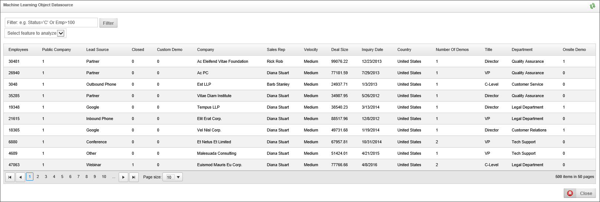
Once you have selected and transformed your dataset, Process Director needs to train itself on the data to apply the type of analysis or prediction you want to apply. The Training tab is where you conduct this training.

The Training tab is divided into two sections. The top section is where you configure the Prediction Feature. The purpose of ML/AI is to analyze data and make predictions based on that analysis, much like the Process Timeline, based on past instances of a Timeline definition, can predict whether a future activity is likely to be late.
This property sets the data column or form field, depending on the data type you're using, that will store the value that will be set as a result of a prediction.
This property sets the desired data type of the column or form field to store the value that will be set as a result of a prediction. Your options are:
This is the mathematical or statistical method that Process Director will use to make the prediction. You have the following options:
This property specifies the data validation method to use for training on the dataset. The available methodologies are:
The Input Features section enables you to select the fields from your dataset that you'd like to analyze to create the prediction. Different fields will have different levels of effectiveness in the analysis. It may be difficult for you to know which fields will provide the best predictive result. You can do sample training on a field or collection of fields to enable Process Director to help you find the most effective fields to analyze by clicking the Train button.
For each available field, a graphical representation of the field's data is displayed. You can select a field to train on by checking the box next to the field, then fort each selected field, choose the type of data analysis you wish to perform during the training. For numerical columns, you can perform Categorical, Numerical, or Exponential analyses, while, for text fields, you can conduct Categorical or "Bag of Words" analyses.

For this example, we have a set of form instances that contain data from a sales process. Along with data about the prospective customer and sales rep, we also have form data that tells us whether the sale closed, how many product demos were done, and other information. Based on the data from our existing sales form instances, we want to make a prediction about whether a sale is likely to close. By selecting a field or fields, then clicking the Train button, Process Director will analyze our data and give us some indication of how effective the selected data will be in a prediction about whether a sale will close.

As previously mentioned, not all fields are good candidates for prediction. Take a look at the result below, when we select and train for a prediction based on the title of the customer's point of contact:

This field doesn't give us much confidence in the predicted result, i.e., whether a sale will close. This uncertainty arises from;
So we need a better field or fields. Let's try some different fields. What about the customer department that is making the sales inquiry? Are some departments more historically likely than others to buy our product? Let's see:

The confidence in the predictive value of this field is much better, but still not great. Let's add some more fields to the Department:
Now, that we've added the additional fields, we can train again to see how predictive our data looks now.

It looks like we've found a set of values that have some fairly good predictive powers. We can use these values to test our prediction, by clicking the Test Predict button to open a prediction test screen.
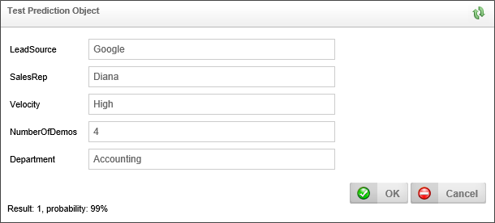
Using these test values, we can see that there appears to be a 99% probability that the sale will close (Result: 1).
We are now ready to Schedule and/or Publish our ML Definition.
The ML Definition has an additional feature to help you analyze your data. When you click the button labeled Suggest Input Features and Algorithm, The ML object will analyze all of the data—and, be aware, depending on how much data you have, this might take some time—and provide some suggestion about what data in your dataset might be the most predictive.

You can click the Select button next to the data column and regression method you'd like to use, and The ML Object will be updated with your selection.
The visualize table enables you to select from your data columns and your predicted column to visualize the data set in graphical form. Once you have selected your data, click the Visualize button to see the data representation.

You can manually publish your ML definition, using the current data, by selecting Publish from the actions menu in the upper right corner of the ML Definition. This will make the ML Definition available, but only the currently existing data will be used for all future analyses/predictions. In order to update the and retrain the ML definition on a continuing basis, so that new data is included in the ML Definition, we need to go to the Schedule tab to configure how often we want to retrain and republish the ML Definition.
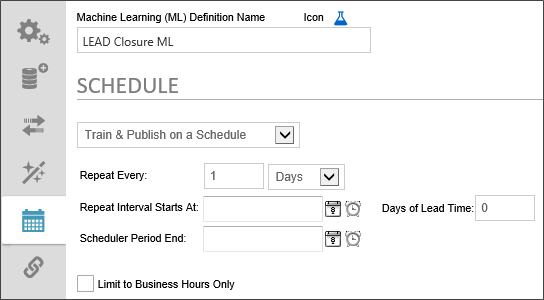
The first item to configure is to turn on scheduled training and publishing. Change the Dropdown value from No Automatic Training & Publishing to Train & Publish on a Schedule. When you do so, scheduling controls will appear that enable you to specify the training and publishing schedule.
You can simply set the retraining to repeat every N days, weeks, months, hours, etc. No further configuration is required. Once you manually publish the first time, the desired repetitions will occur at the specified interval.
The optional date and time to begin scheduling training and publishing. To select a date, click the Calendar icon located to the left of the text box control to open a calender you can use to select the date.
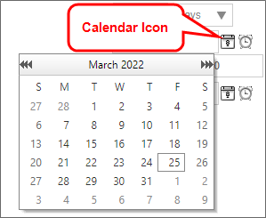
Similarly, to select a time, click the Clock icon located to the left of the text box control to open a time selector you can use to select the time.
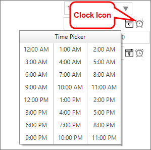
The optional date and time to end scheduling training and publishing. The Configuration method is the same as the Repeat Interval Starts At property.
Sometimes, you want to begin an action prior to the due date. For example, a month-end report may need to be submitted on the first day of each month, covering the activities of the prior month. If we assume this report takes a couple of days to compile and generate, we might want to have a lead time of 2 days. In this case, the publishing and training will be evaluated two days early, so you have adequate lead time to generate the report.
Check the box to publish and train only during the Business Hours that have been configured in the BusinessHourStart and BusinessHourStop Custom Variables for your installation.